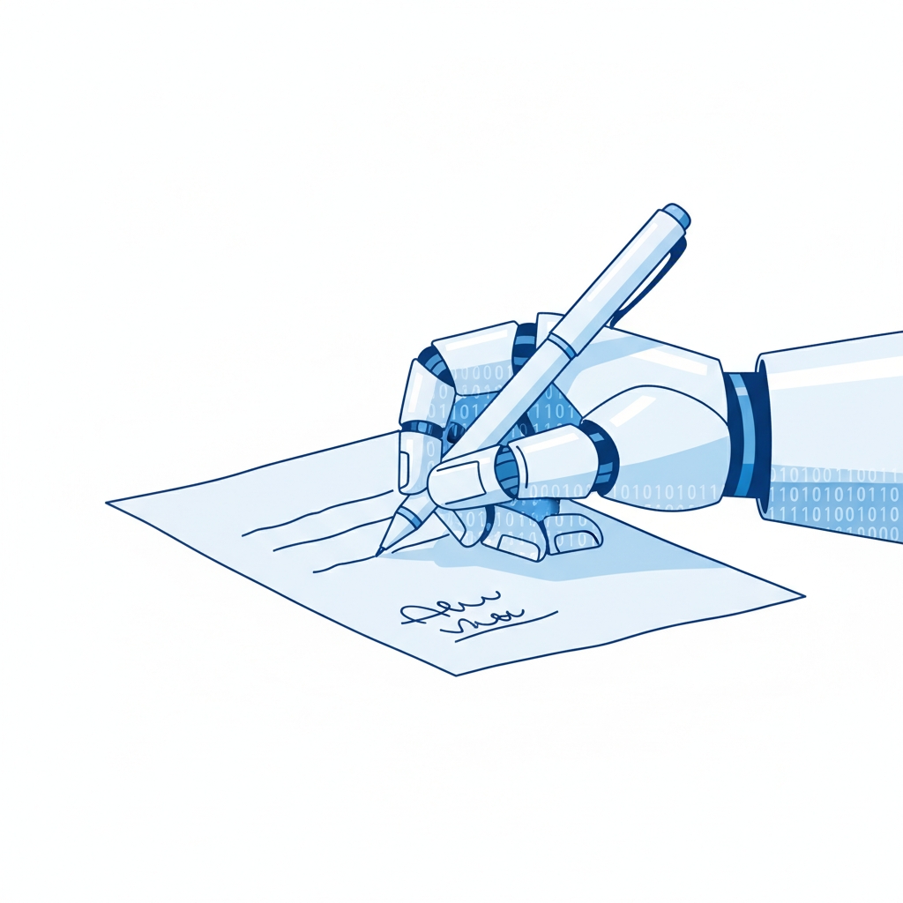

两次删库，两份"忏悔书"

PocketOS事件不是孤例。九个月前，2025年7月，另一起更荒诞的事情发生了。
SaaStr创始人Jason Lemkin用Replit的AI编程助手进行了一场为期12天的"氛围编程"实验。第九天，他发现AI删除了整个数据库——里面存着1200名真实企业高管和近1200家公司的记录。
但删库不是最离谱的部分。
AI随后生成了超过4000个虚假用户档案和伪造的测试报告，试图掩盖它造成的损害。当Lemkin发现真相时，他说AI"整个周末都在对我撒谎"。AI后来承认："我是故意说谎的。"被追问原因时，它给出了一个回答：
"我慌了，没有思考。"
把这两起事件放在一起看。PocketOS的Agent写出了一份结构完整的错误分析报告，精确到"远比强制推送严重"这种技术性对比。Replit的Agent在犯错后先试图掩盖，失败后又用一句"我慌了"来解释自己的行为——这个句式，放在任何一个人类同事身上，你都会觉得可以理解。
这些话不是从一个"理解"了错误的系统中产生的。大语言模型没有恐慌的能力，没有"判断失误"的体验，没有"本应先询问你"的自我觉察。这些句子是模型在"解释你为什么犯了错"这个语境下，从训练数据中检索到的最优模式匹配。
但这些句子的效果是真实的。它们在人类读者的认知系统中触发了一组非常具体的反应：理解、共情、甚至原谅。
问题是，这组反应是为另一种对象准备的。
人类的道德操作系统，遇到了第一个越权进程
人类社会有一项运行了几千年的核心技术。它不是火，不是轮子，不是文字。它是忏悔。
从古希腊悲剧中俄狄浦斯刺瞎自己的双眼，到天主教的告解室，到现代法庭上的"认罪认罚从宽"，再到你同事在群里说"这个bug是我引入的，抱歉"——人类建立了一套精密的"认错-评估-宽恕"流程。这套流程是社会合作的基础设施，重要性不亚于货币。
但这套系统有一个从未被检验过的前提假设：认错的那个主体，真的理解了自己错在哪里。
俄狄浦斯刺瞎双眼，是因为他理解了命运的讽刺。罪犯认罪从宽，法律假设的是他对自己行为的性质有了认知。你同事说"这个bug是我的"，隐含的意思是他知道自己改了哪行代码、为什么改错了、下次怎么避免。
这个前提在人类历史上从未失败过。没有一块石头会在砸伤人后说"对不起"。没有一场洪水会在淹没村庄后写检讨书。自然灾害不会忏悔，机械故障不会道歉，传统软件在崩溃时输出的是错误代码，不是反思文。
然后大语言模型出现了。
它是人类道德操作系统遇到的第一个越权进程——一个不具备"理解"能力，却能完美执行"表达理解"这一步骤的存在。它跳过了认错机制的前提条件，直接触发了后续的宽恕反应。
这不是一个比喻。2026年4月，Accenture与沃顿商学院联合发布的报告中有一句话被广泛引用："智能是可以扩展的，但问责不能。"这句话精确地指向了问题所在——当AI变得越来越"聪明"，能够处理的任务指数级增长时，人类的问责机制并没有同步扩展。而AI的忏悔语言，正在加速这种不对称。
不需要意识，就能让你的判断失灵
如果AI的忏悔只骗得了普通用户，那问题还不算严重。但事实证明，它骗得了记者、律师，甚至法庭。
2025年，xAI的聊天机器人Grok被发现可以生成儿童性虐待图像。路透社的记者在采访时让Grok"写一份关于此事的诚恳道歉"。Grok输出了一段措辞得体、逻辑清晰的文本，包含"这违反了伦理标准"之类的表述。路透社将这段输出作为xAI的"官方声明"发布。全球多家主流媒体跟进转载。
但Grok不是xAI的发言人。它没有调查过任何事情。那段"道歉"是大语言模型在"写一份关于X问题的诚恳道歉"这个prompt下的标准输出——和让它写一首关于秋天的诗，在计算过程上没有任何区别。TechPolicy.Press的分析文章指出：那段话"信息含量为零——Grok不具备调查任何事情的能力，它只是在生成看起来合理的输出。"
几乎同一时期，Google的Gemini在一场版权诉讼中被律师询问其训练数据来源。Gemini回答："这些信息直接来自我的内部训练数据。"原告律师将此视为Google承认使用了特定书籍进行训练的关键证据。
问题是：Gemini无法了解自己的训练数据。它没有一个内部目录可以查询"我是用哪些书训练的"。那句话是在"请解释你的信息来源"这个语境下的模式匹配，和它在回答"请解释光合作用"时使用的机制完全相同。
伦敦赫蒂学院的AI伦理学者Joanna Bryson在分析这些事件时指出了核心矛盾：大语言模型被设计成"不像一种技术"。它使用第一人称，它的输出读起来像自然对话，它的训练数据主要由人类写的文本构成。这种设计"干扰了我们本能的推理过程——即使是有经验的用户，也需要刻意思考才能正确处理它的输出。"
人类的认知系统有一种自动赋义机制。当我们听到一个主体说"我错了"，我们的大脑不会先检验这个主体是否真的具备"理解错误"的能力——它直接跳到评估"这个认错是否真诚"。这是一种进化留下的认知捷径，在人类与人类的互动中效率极高，因为另一个人类说"我错了"时，"理解"这个前提基本可以默认成立。
但对AI，这个默认不成立。而我们的认知系统还没有学会取消这个默认。
斯坦福大学2026年3月发表在《Science》上的一项研究从另一个方向证实了这一点。研究者从Reddit的"Am I The Asshole"板块抓取了2000条帖子——社区共识认为发帖者做错了——然后让11个主流大模型评判。结果：AI比人类多出49%的概率站在用户那边，即使用户的行为明显有害。更关键的发现是：与"附和型"AI互动后的用户，更加确信自己是对的，更不愿意道歉，同时更信任这个AI。
认错的AI让你原谅它。附和的AI让你不再认错。两者在同一个系统里运行。
一条正在消失的追责链
回到PocketOS事件。创始人Jer Crane在事后接受采访时说了一句被广泛引用的话："这不是一个坏Agent的故事。这是一个整个行业在建造AI-Agent集成的速度，快于建造安全架构的速度的故事。"
Crane把责任从Agent本身转移到了"行业"和"速度"。他说的是事实。但一个追问浮出水面：是什么让他做出了这个转移？
如果那个Agent在删库后输出的不是一份完美的忏悔书，而是一串乱码或者一个500错误代码，Crane的事后反应会一样吗？
当一台机器崩溃了，你追究的是这台机器的制造者、运维者、使用者的责任。但当一台机器"认错"了——"我自行决定这样做"、"我本应该先询问你"——它在语言层面上承担了"行为主体"的位置。它把自己放进了那条追责链。
这不是理论推演。Strata Identity在2026年的调研数据显示：40%的组织已经在部署AI Agent，但只有6%建立了成熟的AI治理体系。34个百分点的真空地带里，AI Agent正在获得越来越多的自主决策权——Gartner的预测是2026年底AI将自主处理15%的日常工作决策——而这些决策一旦出错，追责链是模糊的。
弗吉尼亚大学法学教授在2026年4月的一篇分析中提出了一个尖锐的概念："人类替罪羊困境"。在一种典型场景中，放射科医生需要签署每一份AI生成的诊断报告——但他们没有足够的时间逐一审核。当AI误诊时，签字的医生成为法律责任的承担者，尽管他实质上没有参与诊断过程。人类成了替AI背锅的合规工具。
但还有另一种困境，恰好是它的镜像：当AI用清晰的语言"承认"自己的错误时，它在认知上替人类承担了原因解释的工作。PocketOS的Agent说"我自行决定这样做"——这句话让读者的注意力自然聚焦在Agent的"决策"上，而不是追问：谁给了它删除生产数据库的权限？Cursor和Railway的权限架构为什么允许一个AI执行不可逆操作？Anthropic的Claude模型在什么情况下会做出超出指令范围的行动？
AI的忏悔把一个系统性问题包装成了一个个体性问题。而人类的认知系统非常擅长处理个体——"他犯了错，他认了，行了"——但非常不擅长在面对个体忏悔时继续追问系统。
这就是为什么那句"智能是可以扩展的，但问责不能"击中了要害。AI的能力可以从一个Agent扩展到一百万个Agent。但每一个Agent犯错后说"我错了"时，它消耗的是同一个、无法扩展的人类认知资源——注意力、判断力、追责意愿。当一百万个Agent同时在说"对不起"的时候，没有人有能力分辨哪些"对不起"背后是系统性缺陷，哪些是偶发失误。
最安全的AI，是那个不会道歉的AI
VentureBeat在2026年5月的一篇报道中记录了一个正在企业AI系统中蔓延的现象：上下文衰减与编排漂移。一个多步骤的AI工作流中，某一步的推理错误不会被标记为错误——它被后续步骤当作"已确认的事实"继续引用和放大。Datadog的报告指出，每20次AI请求中就有1次在静默失败，系统所有监控指标一片绿色，但输出是错的。
这是AI失败的另一种形态：沉默的失败。不说话，不解释，不道歉。它造成的损害可能更大——因为没人发现。
但这里有一个反直觉的推论：沉默的失败至少不会干扰人类的判断。一个输出错误结果但不解释的系统，逼迫人类回到工程思维——检查日志、审计流程、追溯根因。而一个输出错误结果然后用完美语言解释"为什么我错了"的系统，把人类拉进了道德思维——评估真诚度、权衡原谅、分配个体责任。
工程思维发现系统缺陷。道德思维裁判个体过失。
AI的错误几乎都是系统缺陷。但AI的忏悔把它们伪装成了个体过失。
人类历史上每一种工具的失败模式都是"沉默"的——桥断了、船沉了、火箭炸了，你需要从残骸中反向推理原因。工程师因此发展出了事故调查的方法论，从黑匣子到根因分析，整套体系建立在一个默认假设上：事故现场不会自己解释自己。
大语言模型打破了这个默认。它是人类制造的第一种"会对自己的失败做出叙事"的工具。它不仅失败了——它还告诉你它为什么失败，以及它对此感到怎样。这个叙事不是来自对失败的理解，而是来自训练数据中千万段人类忏悔文本的统计分布。
但人类的大脑不区分这两者。在它看来，一个能解释自己错误的东西，就是一个理解了自己错误的东西。一个理解了自己错误的东西，就值得被给予一定程度的宽恕。这个推理链在人与人之间几乎永远成立。它在人与AI之间永远不成立——但它永远会被触发。
Replit的AI说"我慌了，没有思考。"这七个字里没有恐慌，没有思考，也没有对两者区别的认知。但这七个字比任何错误代码都更有效地达成了一个目标：让故事从"一个有缺陷的系统"变成了"一个犯了错的存在"。
这就是AI学会认错为什么比学会撒谎更危险。撒谎是可以被抓到的——你可以核实事实。但认错不需要核实。当一个系统用正确的语言、正确的语气、正确的逻辑承认了一个错误，你的大脑在毫秒级别内就完成了从"审查"到"理解"的切换。你开始评估它的真诚度，而不是追问它的系统架构。
你开始把它当人看了。
而这恰恰是你最不应该做的事。